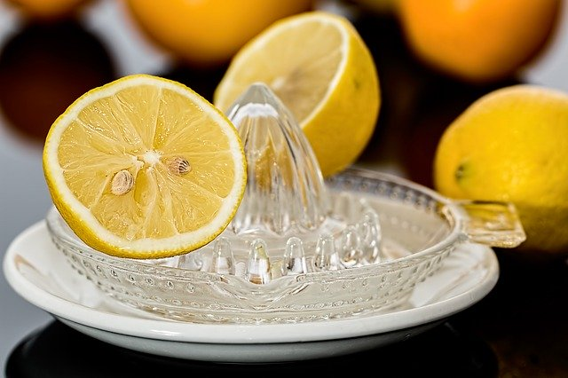
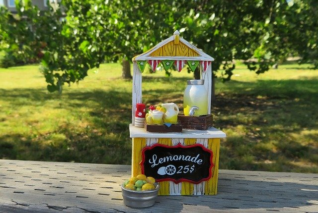

Événements
Nous vous invitons à participer à des dégustations privées de
citronnade dans toute la France. La citronnade est une boisson
saine, mettant en avant le goût unique des différents agrumes frais
et bio de production locale.
Une carte vous est proposée présentant les différents lieux de
rencontre.
Rejoignez nous en vous inscrivant !
Inscription
À propos

Combava est une association qui regroupe des producteurs indépendants d'agrumes du sud de la France. Elle s'est inspirée de la vente de citronnade sur des stands aux États-Unis afin de promouvoir les dégustations proposées.
